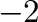
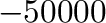

Next: environ.io default Up: The environ class: MODELLER Previous: The environ class: MODELLER Contents Index
This creates a new environ object. rand_seed is used to seed the random number generator used throughout MODELLER, and should be set to a negative integer between  and  if you do not want to use the default value. restyp_lib_file specifies the file to read the residue type library from; it should be a filename or readable file handle (see modfile.File()). If unspecified, the default ('restyp.lib') file is used. This file contains the mapping between one-letter residue types and CHARMM and PDB names; see the FAQ Section 3.1, Question 8 for the format of this file.
You can assign the new environ object to the Python variable 'env' with the following:
env = environ()
You can release the object from memory when you no longer need it in standard Python fashion, either by an explicit del(env) or by reassigning env to some other object.
When you create new MODELLER objects (such as model or alignment objects) they require an environ object, which they use for their own default values. Note that each object gets a copy of the environment, so it is not affected by any changes you make to the global environment after its creation. You can, however, modify the object's own environment directly, by assigning to its .env member:
env = environ()
env.io.hetatm = True # New objects will read HETATM records from PDB by default
mdl = model(env) # Create new model object (with hetatm=True)
mdl.env.io.hetatm = False # hetatm is now False, but only for 'mdl'
If in doubt, set anything you need to set within environ before you create any objects.